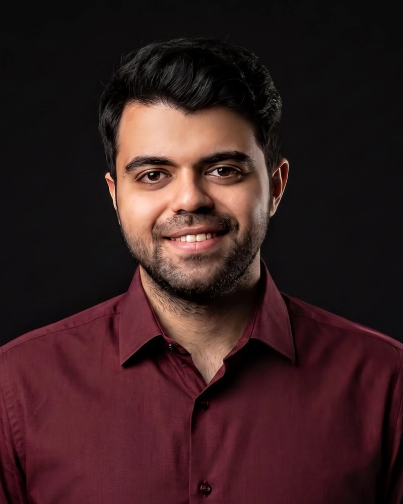

PhD Researcher · Biomedical AI & Visual Neuroscience
Amir Reza Naderi Yaghouti
I develop deep learning and computer vision methods for medical imaging, currently focused on detecting visual pathway anomalies in glaucoma and rare patient groups.
Joint PhD · Otto-von-Guericke University Magdeburg, Germany & University of Groningen, the Netherlands
- Publications
- 4
- Citations
- 58
- h-index
- 3
- i10-index
- 2
About
I'm Amir Reza Naderi Yaghouti, or Amir Naderi for short, a Marie Skłodowska-Curie Doctoral Candidate in the EGRET-AAA network, pursuing a joint PhD in visual neuroscience at Otto-von-Guericke University Magdeburg and the University of Groningen. In Magdeburg I work at the University Clinic for Ophthalmology under the supervision of Prof. Michael B. Hoffmann and Dr. Khaldoon O. Al-Nosairy; in Groningen I work with Prof. Nomdo M. Jansonius.
My research uses deep learning and computer vision to build intelligent, data-driven diagnostic tools. Before glaucoma, I worked on machine learning for liver disease: grading nonalcoholic fatty liver disease from ultrasound images and detecting non-alcoholic steatohepatitis from clinical and blood parameters. I was born and raised in Tehran, where I earned my BSc and MSc in Biomedical Engineering.
Research interests
- Medical image analysis
- Glaucoma & optic nerve head
- Visual pathway anomalies
- Deep learning
- Computer vision
- Explainable & trustworthy AI
- Biomarker discovery
- Ultrasound imaging
News
New paper in the Journal of Biomedical Physics and Engineering: classifying nonalcoholic fatty liver grades with pre-trained CNNs and a random forest on B-mode ultrasound. Read more (opens in new tab)
New paper in Scientific Reports: machine learning approaches for early detection of non-alcoholic steatohepatitis (NASH) from clinical and blood parameters. Read more (opens in new tab)
Started a joint PhD in Visual Neuroscience at Otto-von-Guericke University Magdeburg and the University of Groningen as a Marie Skłodowska-Curie Doctoral Candidate (EGRET-AAA, Project 9), working on deep learning for visual pathway anomalies in glaucoma. Read more (opens in new tab)
Publications
Full list on Google Scholar2025
- Classification of Nonalcoholic Fatty Liver Grades using Pre-Trained Convolutional Neural Networks and a Random Forest Classifier on B-Mode Ultrasound Images
Journal of Biomedical Physics and EngineeringCited by 5
- Artificial intelligence for ovarian cancer detection with medical images: a review of the last decade (2013–2023)
Archives of Computational Methods in Engineering 32 (7), 4093-4124Cited by 13
2024
- Machine learning approaches for early detection of non-alcoholic steatohepatitis based on clinical and blood parameters
Scientific Reports 14, 2442Cited by 37
2021
- Automatic classification of Non-alcoholic fatty liver using texture features from ultrasound images
Tehran University Medical Journal 79 (1), 10–17Cited by 3
Experience
-
Doctoral Candidate (Marie Skłodowska-Curie, EGRET-AAA DC9)
Otto-von-Guericke University Magdeburg · University Clinic for Ophthalmology
Deep learning for detecting visual pathway anomalies in glaucoma and rare patient groups, supervised by Prof. Michael B. Hoffmann and Dr. Khaldoon O. Al-Nosairy.
-
Doctoral Researcher (joint PhD)
University of Groningen · University Medical Center Groningen
Groningen side of the joint doctorate within EGRET-AAA, supervised by Prof. Nomdo M. Jansonius.
-
Researcher, Machine Learning for Liver Disease
In collaboration with Dr. Ahmad Shalbaf
Built machine learning and CNN-based pipelines for grading nonalcoholic fatty liver disease from B-mode ultrasound and for early NASH detection from clinical and blood data, resulting in papers in Scientific Reports, the Journal of Biomedical Physics and Engineering, and the Tehran University Medical Journal.
Education
-
Doctor of Philosophy (PhD), Visual Neuroscience
Otto-von-Guericke University Magdeburg, Germany
University of Groningen, the Netherlands
-
Master of Science (MSc), Biomedical Engineering
Islamic Azad University, Science and Research Branch, Tehran
-
Bachelor's Degree (BSc), Biomedical Engineering
Islamic Azad University, Science and Research Branch, Tehran
Skills
Languages & tools
- Python
- MATLAB
- Git
- Jupyter
Deep learning
- PyTorch
- TensorFlow
- MONAI
- scikit-learn
Imaging & vision
- OpenCV
- Fundus imaging
- Ultrasound
- Texture analysis
Methods
- CNNs & transfer learning
- Feature selection
- Ensemble models
- Explainable AI
Contact
I'm happy to talk about research collaborations, medical imaging, and AI for ophthalmology.
naderi.bme@gmail.com